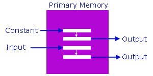

|
Development |

|
|
Basic Memory Operations Choose an appropriate data type for each variable in a program, based on knowledge of the features required of the variable and the internal representation of the available data type "On two occasions I have been asked [by members of Parliament], 'Pray, Mr. Babbage, if you put into the machine wrong figures, will the right answers come out?' I am not able rightly to apprehend the kind of confusion of ideas that could provoke such a question." (Charles Babbage) Constants | Assignment Operator | Output | Input | ExerciseThe C compiler allocates space for program variables in primary memory. We work with variables in four principal ways. For example, we can
 Constants The compiler embeds constants directly into the program instructions and does not allocate memory for constants. Numeric We identify the data type of a numeric constant by a suffix, if any, on the value itself. Suffixes include
Character We define a character constant in any one of four ways:
Escape Sequences We represent special actions or characters that are difficult to write directly by escape sequences:
* - In the IBM reference card, System /370 Architecture Reference Summary, the \ does not appear with an EBCDIC code. The value may vary from machine to machine. Note the backslash before each symbol. The escape character sequences are relatively machine independent, while the numerical values may vary from encoding sequence to another. Literal Strings We represent a literal string by enclosing it in double quotes. For example,
Assignment Operator We use the assignment operator to store a value in a program variable. The form of an assignment is variable = variable, constant or expression= is the assignment operator. For example, the statements
The assignment operator is unidirectional. The left operand must be a variable. The compiler rejects
Output To output data to the standard output device, we use a statement of the form printf( format string , variable , ... , variable );printf is a C library function. We study functions later in the reading on modularity and library functions in the reading on libraries. The format string is a literal string. After the format string, we list the variables to be displayed, separated by commas. The format string itself consists of the characters to be displayed interspersed with conversion specifiers. There should be as many variables listed after the format string as there are conversion specifiers. Conversion Specifiers All conversion specifiers begin with a % symbol. Each specifier describes how the corresponding variable is to be formatted on display:
For example, the following program
Input To accept data from the standard input device, we use a statement of the form scanf( format string , address , ... , address );scanf is a C library function. The format string is a literal string. After the format string, we list the memory address of each variable into which we want the input stored. The prefix & denotes 'address of'. For example,
The format string consists of conversion specifiers. There should be as many addresses listed after the format string as there are conversion specifiers in the format string. Conversion Specifiers The conversion specifiers begin with a % symbol. Each specifier describes how the input is to be converted before being stored in the corresponding address.
For example, the following statements
In-class practice: write a program that prompts the user for the amount of money in their pockets, accepts the user input, and displays the amount in the format shown below. If the user enters 4.52, your program displays
Exercise
|
|||||||||||||||||||||||||||||||||||||||||||||||||||||||||||||||||||||||||||||||||||||||||||||||||||||||||||||||||||||||||||||||||||||||||||||||||||||||||||||||||||||||||||||
|
|
Top
|
|
|
Next: Expressions
|
| Designed by Chris Szalwinski | Copying From This Site |